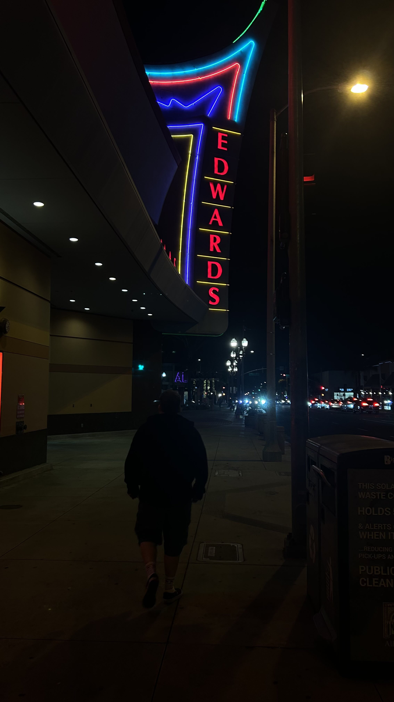

California State University, Los Angeles
B.S. in Computer Science
Focused on Software Engineering and Data Science
About
I am a recent Computer Science graduate from California State University, Los Angeles, deeply passionate about building secure, scalable, and data-driven solutions. With a technical foundation spanning Software Engineering, Data Science, and Network Security, I enjoy navigating the complexities of the full development lifecycle - from managing robust databases to deploying interactive VR environments.
I am currently seeking new professional opportunities where I can apply my skills in System Administration, IT, CyberSecurity, or Data Analysis. I am driven by the goal of making technology more efficient and accessible.
Education
California State University, Los Angeles
Focused on Software Engineering and Data Science
South Pasadena High School
Portfolio
Unity | Meta Quest 2
Developed a 3-5 minute VR proof-of-concept game in Unity targeting the Meta Quest 2, utilizing the XR Interaction Toolkit for interaction and locomotion.
Data Science | Ensemble Models
A data science project utilizing Random Forest and AdaBoost ensemble methods to classify and predict rainfall patterns.
Networking | Packet Analysis
Implementation of Distance Vector routing protocols and socket programming, with packet-level analysis.
Work Experience
Landmark Theatres | Jan 2026 - Present
Landmark Theatres | Aug 2024 - Present
iFixit (Contract) | Feb 2024 - May 2024
Staples | Aug 2023 - Sep 2024
SF Math Circle | Oct 2022 - Dec 2022
Buffalo Wild Wings | Jul 2019 - Jan 2020
Resume

Outside the terminal
My name is George Barrone, I am 25 years old. I have a strong passion for Films and Video Games. My favorite hobby is keeping up on new film releases weekly.
I mostly game on my Custom Built Desktop PC, mostly playing competitive FPS as well as Story Driven games. I watch plenty of movies at home but nothing can top the experience of seeing a movie whether that be old or new releases IN theaters.
Interests
Fallout New Vegas, Super Smash Brothers Melee, Counter Strike
The Big Lebowski, Lady Bird, The Worst Person in the World, Full Metal Jacket